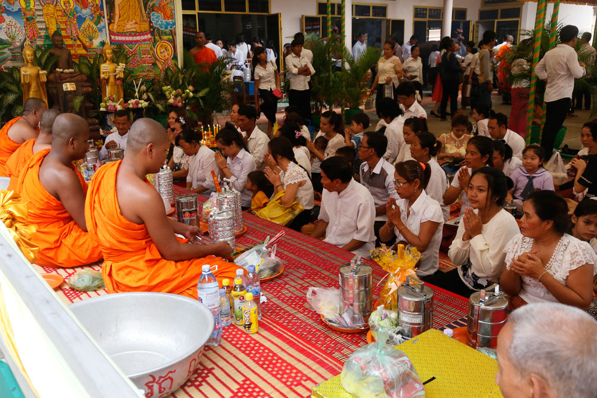

ពិធីបុណ្យ (Celebration) គឺជាការប្រមូលផ្តុំគ្នាដើម្បីរំឭក
និងប្រារព្ធនូវព្រឹត្តិការណ៍សំខាន់ៗ
ក្នុងព្រះពុទ្ធសាសនា និងវប្បធម៌។ វាជាពេលវេលាសម្រាប់ការសាងបុណ្យកុសល
និងការជួបជុំសាមគ្គីភាព។
គោលបំណងសំខាន់គឺដើម្បីរំឭកគុណព្រះរតនត្រ័យ (ព្រះពុទ្ធ ព្រះធម៌
ព្រះសង្ឃ) និងបុព្វការីជន។
តើចម្លើយនេះមានប្រយោជន៍ទេ?
វិសាខបូជា (Visakha Bucha) គឺជាពិធីបុណ្យដ៏សំខាន់បំផុត
ដែលរំឭកព្រឹត្តិការណ៍ ៣ យ៉ាងរបស់ព្រះពុទ្ធ៖
១. ប្រសូត (Birth):
ថ្ងៃដែលព្រះអង្គប្រសូត។
២. ត្រាស់ដឹង
(Enlightenment):
ថ្ងៃដែលព្រះអង្គបានត្រាស់ដឹងនូវអនុត្តរសម្មាសម្ពោធិញាណ។
៣. បរិនិព្វាន (Nirvana):
ថ្ងៃដែលព្រះអង្គចូលបរិនិព្វាន។
សកម្មភាពសំខាន់ៗ៖
- ធ្វើបុណ្យដាក់ទាន និងស្តាប់ធម៌
- ដើរហែរប្រទីបជុំវិញព្រះវិហារ (ក្បួនដង្ហែរវិសាខបូជា)
- រក្សាសីល និងធ្វើសមាធិ
តើចម្លើយនេះមានប្រយោជន៍ទេ?
ភ្ជុំបិណ្ឌ (Pchum Ben) គឺជាពិធីបុណ្យប្រពៃណីដ៏ធំក្នុងប្រទេសកម្ពុជា
ប្រព្រឹត្តទៅរយៈពេល ១៥ថ្ងៃ (១រោច ដល់ ១៥រោច ខែភទ្របទ)។
គោលបំណង: ដើម្បីឧទ្ទិសកុសលផលបុណ្យដល់ញាតិការទាំង ៧
សន្តានដែលបានចែកឋានទៅ។
សកម្មភាពសំខាន់ៗ៖
- យកចង្ហាន់ទៅប្រគេនព្រះសង្ឃនៅវត្ត
- បោះបាយបិណ្ឌ (សម្រាប់ប្រេត)
- ស្តាប់ព្រះធម៌ទេសនា និងបង្សុកូល
តើចម្លើយនេះមានប្រយោជន៍ទេ?
បុណ្យកឋិនទាន (Kathina) ធ្វើឡើងក្រោយពេលព្រះសង្ឃចេញព្រះវស្សា (រយៈពេល
២៩ថ្ងៃ ពី ១រោច ខែអស្សុជ ដល់ ១៥កើត ខែកត្តិក)។
គោលបំណង: ដើម្បីដង្ហែរស្បង់ចីវរ
និងទេយ្យទានទៅប្រគេនព្រះសង្ឃដែលបានគង់ចាំវស្សាគ្រប់ ៣ខែ។
បុណ្យនេះអាចធ្វើបានតែម្តងគត់ក្នុងមួយឆ្នាំសម្រាប់វត្តនីមួយៗ
ហើយមានរយៈពេលកំណត់ច្បាស់លាស់។
តើចម្លើយនេះមានប្រយោជន៍ទេ?
ចូលឆ្នាំខ្មែរ (Cambodian New Year) គឺជាពិធីបុណ្យប្រពៃណីជាតិ
ប្រារព្ធនៅខែមេសា (១៣-១៥ ឬ ១៤-១៦)។
អត្ថន័យ: ទទួលទេវតាឆ្នាំថ្មី
និងលាងជម្រះឧបទ្រពចង្រៃពីឆ្នាំចាស់។
សកម្មភាពសំខាន់ៗ៖
- រៀបចំសក្ការៈបូជាទទួលទេវតា
- ស្រង់ព្រះ និងលាងជើងឪពុកម្តាយ
- ពូនភ្នំខ្សាច់ និងលេងល្បែងប្រជាប្រិយ
តើចម្លើយនេះមានប្រយោជន៍ទេ?
មាឃបូជា (Magha Puja) រំឭកដល់ការប្រជុំចតុរង្គសន្និបាតនៃព្រះអរហន្ត ១២៥០
អង្គ ដោយមិនបានណាត់ទុក។
គោលបំណង: រំឭកដល់ "ឱវាទបាតិមោក្ខ"
ដែលជាបេះដូងនៃព្រះពុទ្ធសាសនា (មិនធ្វើបាប, ធ្វើបុណ្យ,
ធ្វើចិត្តឱ្យបរិសុទ្ធ)។
តើចម្លើយនេះមានប្រយោជន៍ទេ?
បុណ្យបណ្ដែតប្រទីប គឺជាពិធីសុំខមាទោសដល់ព្រះគង្គា
និងរំឭកគុណដល់ស្នាមព្រះបាទរបស់ព្រះពុទ្ធនៅទន្លេនម្មទា។
គោលបំណង: បណ្តែតទុក្ខសោកឱ្យហូរទៅតាមទឹក
និងសុំសេចក្តីសុខសប្បាយ។
តើចម្លើយនេះមានប្រយោជន៍ទេ?
សារៈសំខាន់នៃពិធីបុណ្យមានដូចជា៖
- ការអភិរក្ស: រក្សាប្រពៃណី និងវប្បធម៌ឱ្យនៅគង់វង្ស។
- សាមគ្គីភាព: បង្កើតឱកាសជួបជុំគ្រួសារ និងសហគមន៍។
- ការអប់រំចិត្ត: បណ្តុះគំនិតធ្វើបុណ្យ ចេះចែករំលែក និងកតញ្ញូ។
- សន្តិភាព: នាំមកនូវសេចក្តីសុខផ្លូវចិត្ត។
តើចម្លើយនេះមានប្រយោជន៍ទេ?
មិនមានលទ្ធផលសម្រាប់ការស្វែងរកនេះទេ។
ពិធីបុណ្យសំខាន់ៗ
វិសាខបូជា
រំឭកពីថ្ងៃ ប្រសូត ត្រាស់ដឹង និង បរិនិព្វាន របស់ព្រះសម្មាសម្ពុទ្ធ
ភ្ជុំបិណ្ឌ និង កាន់បិណ្ឌ
ជាពិធីបុណ្យប្រពៃណីជាតិ ទទួលទេវតាឆ្នាំថ្មី និងប្រារព្ធសិរីសួស្ដី។
ចូលឆ្នាំខ្មែរ
ការរក្សាសីល នាំមកនូវសន្តិភាពក្នុងចិត្ត និងភាពចុះសម្រុងគ្នាក្នុងសង្គម។
ត្រៀមខ្លួនចូលរួមប្រពៃណីឬនៅ?
ការយល់ដឹងពីពិធីបុណ្យ ជួយឲ្យយើងចូលរួមដោយសេចក្ដីជ្រះថ្លា។ ស្វែងយល់ និងចូលរួមថែរក្សាទាំងអស់គ្នា។
ស្វែងយល់ពី "ភ្ជុំបិណ្ឌ"